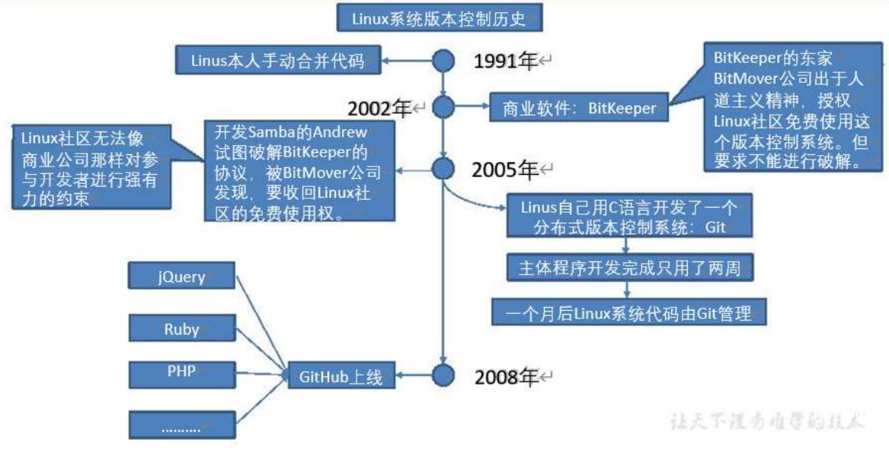

Git 历史
历史使人明智，当我们谈论到某一个伟大的工具的时候，当然是少不了去了解它的历史；只有我们清楚地明白到它是为了解决什么样的问题而产生的，我们才能够更好地去学习了解使用它；
1、git是由谁发明的？
答: git是由Linus发明的，基于C语言的；
2、在当时是为了解决什么样的历史问题？
答: 谈及这个问题就不得不提起另一个伟大的工具linux，在2002年以前呀，这个工具的维护研发是由世界各地的程序员共同参与的，他们写出来的代码全部都交给Linus去合并的 如下图：

时间节点来到了2002年，这时候经过了十多年的发展参与的人是越来越多了，而一个人合并难以避免的就是效率低这也直接引起了维护者们的不满；
其实在当时已经存在一些版本控制的工具的了，像cvs，svn等，但是这些工具都是要收费的，而且使用的还是集中式版本管理方式。这就受到了Linus的唾弃；
后来Linus选择了BitKeeper分布式版本控制工具作为他们的版本管理工具，这个系统的研发公司也是出于人道博爱的精神给他们免费使用了；
大家都知道linux系统是很牛逼的，所以能参与维护的都不是一般的攻城狮呀，有一天团队里面的一个人就想着破解BitKeeper的协议呀，当时也是被它的研发公司发现了，他们就骂骂咧咧地收回了给他们的使用权；之后就是Linus被迫自己花了半个月时间用C写了git这个伟大的分布式版本控制工具了；

所以Git的产生就是为了解决团队开发效率问题以及开发版本的管理的
3、第二个问题提到的分布式和集中式有什么区别？
答：集中式：拥有一台中央处理服务器，每个电脑处理前都需要连接中央处理服务器去拉取一个版本库，改完再推回去；

分布式：去中心化，没有中央处理服务器，每个人的电脑都是完整的一个版本库，每个电脑都是独立连接的；

Git 简介
Git是目前世界上最先进的分布式版本控制系统，是一款免费、开源的分布式版本控制系统，用于敏捷高效地处理任何或小或大的项目。
Git是一个开源的分布式版本控制系统，可以有效、高速的处理从很小到非常大的项目版本管理。
Git 是 Linus Torvalds 为了帮助管理 Linux 内核开发而开发的一个开放源码的版本控制软件。
Git 特点
-
Git易于学习，占地面积小，性能极快。
-
它具有廉价的本地库，方便的暂存区域和多个工作，流分支等特性。
-
适合分布式开发，强调个体；
-
任意两个开发者之间可以很容易的解决冲突；
-
离线工作。
缺点：
-
代码保密性差，一旦开发者把整个库克隆下来就可以完全公开所有代码和版本信息；
-
权限控制不友好；如果需要对开发者限制各种权限的建议使用SVN。
何为版本控制
分布式控制 VS 集中式机制
目前市场上有两种版本控制：集中式和分布式
先说集中式版本控制系统，版本库是集中存放在中央服务器的，而干活的时候，用的都是自己的电脑，所以要先从中央服务器取得最新的版本，然后开始干活，干完活了，再把自己的活推送给中央服务器。中央服务器就好比是一个图书馆，你要改一本书，必须先从图书馆借出来，然后回到家自己改，改完了，再放回图书馆
SVN是集中式版本控制系统，版本库是集中放在中央服务器的，而干活的时候，用的都是自己的电脑，所以首先要从中央服务器哪里得到最新的版本，然后干活，干完后，需要把自己做完的活推送到中央服务器。而且集中式版本控制系统是必须联网才能工作。
Git是分布式版本控制系统，它就没有中央服务器的，每个人的电脑就是一个完整的版本库，这样，工作的时候就不需要联网了，因为版本都是在自己的电脑上
版权声明：本文为CSDN博主「苎羽」的原创文章，遵循CC 4.0 BY-SA版权协议，转载请附上原文出处链接及本声明。
原文链接：https://blog.csdn.net/weixin_43320895/article/details/124062327